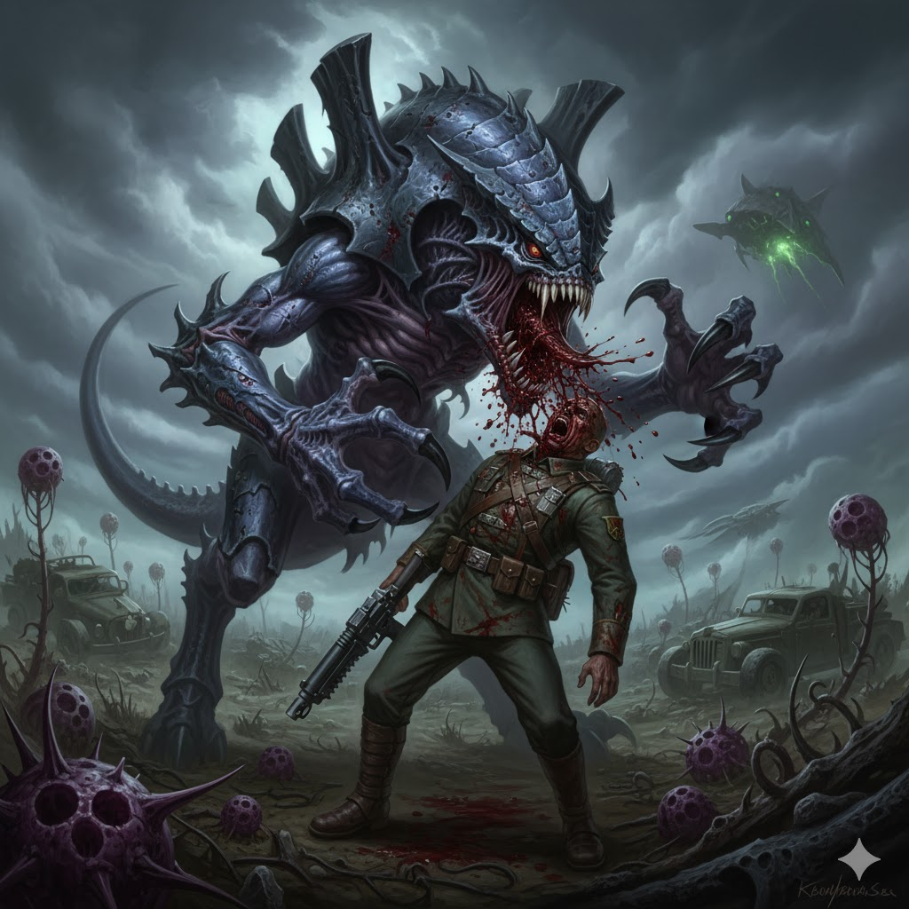
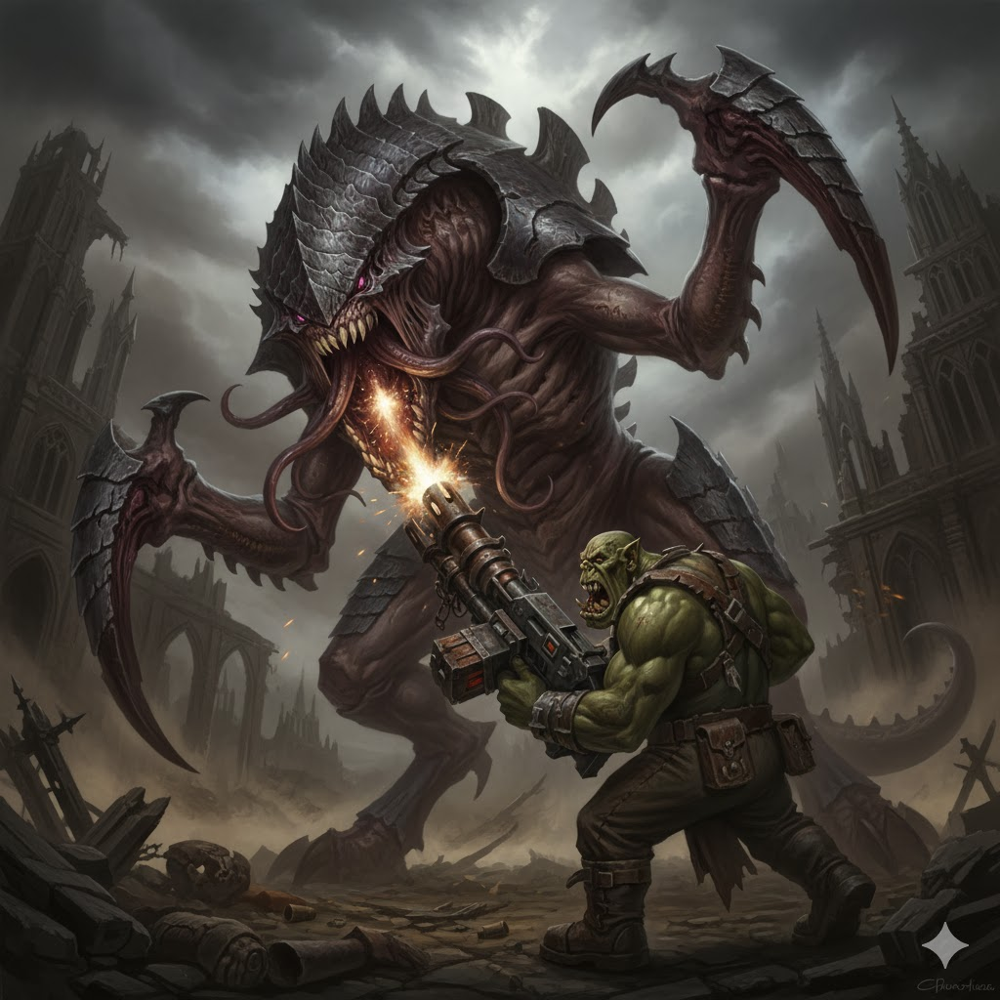

Tyranides

A Maré Biológica
Os Tyranides são um pesadelo extragaláctico. Avançam em enxames, devoram toda a biomassa e remodelam planetas, deixando mundos mortos para trás em busca do próximo banquete.

Variações Infinitas
Cada criatura é feita sob medida pela Mente-Enxame: há desde monstros do tamanho de cidades até pequenos vorazes que destroem tudo em ondas imparáveis.
Curiosidades
- Comunicam-se telepaticamente pela Mente-Enxame.
- São guiados por instintos bioengenheirados, sem piedade ou compaixão.
- A presença Tyranide interfere na navegação do Warp, tornando invasões quase impossíveis de detectar a tempo.